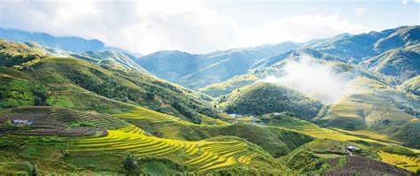

Sapa - Thành Phố Trong Sương
Sapa là một điểm đến tuyệt đẹp nằm ở miền núi phía Bắc Việt Nam. Với khí hậu mát mẻ quanh năm, những ruộng bậc thang trải dài và văn hóa đa dạng của các dân tộc thiểu số, Sapa đã trở thành điểm đến lý tưởng cho du khách trong và ngoài nước.
Du khách có thể trải nghiệm leo núi Fansipan, tham quan các bản làng như Cát Cát, Tả Van, hoặc thưởng thức các món ăn đặc sản như cá hồi, thắng cố. Sapa luôn là nơi mang lại những trải nghiệm khó quên.